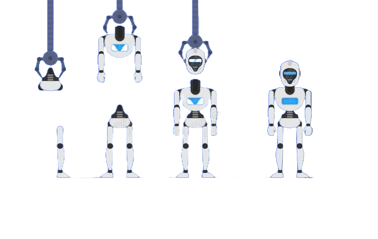
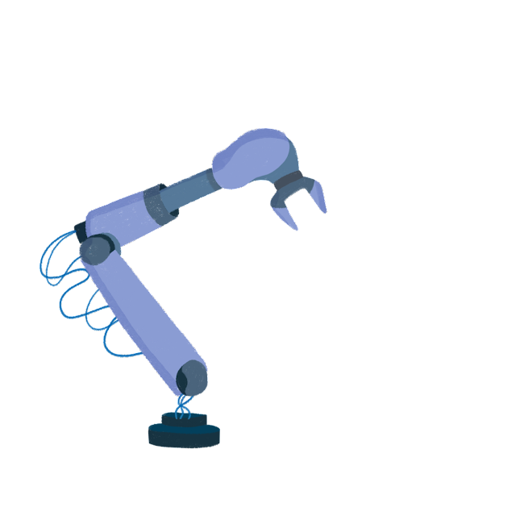

Herbruikbaarheid robots
Millieutoepassing van robots
Voor en nadelen Robotica
Contact
Industriële robots
Robots kunnen tegenwoordig bijna overal voor worden ingezet, maar het meest komen ze voor in de industrie.
Vaak komen deze robots voor in de vorm van een soort kraanmachine met aan het uiteinde een grijphand.
Deze machines zijn heel handig om producten te maken doormiddel van verschillende stukken bij elkaar te zetten.
maar ze kunnen nog veel meer taken uitvoeren zoals:
lassen van auto-onderdelen, verpakken van producten, schilderen en afwerken van producten en nog veel meer!
Natuurlijk kunnen mensen dit ook maar robots zijn hier vele malen nauwkeuriger in en doen dit een stuk sneller.
Vaak zijn de werkomstandigheden ook niet ideaal voor het menselijk lichaam vanwege giftige stoffen of hoge tempraturen, robots hebben hier geen last van.

De allereerste industriële robot die ooit op de markt kwam werd in 1973 op de markt gezet de
‘IRB 6’
was ontworpen door ABB robotics en Kuka robotics. Deze robot kon bewegingen maken in 5 verschillende assen en had een hefvermogen van 6kg.
De IRB 6 werd vooral ingezet in de industrie, maar hij was natuurlijk niet zo efficiënt als de robots die we nu kennen.
De evolutie van robots ging sinds de eerste industriële robot razend snel en we ontdekken vandaag de dag nog steeds veel nieuwe dingen.
We begonnen bij robots die voorgeprogrammeerd werden om één bepaalde taak te herhalen, daarna kregen de robots een grote verbetering namelijk sensoren,
die zorgen ervoor dat de robots hun taken met veel meer precisie uitvoeren. Sinds kort maken robots gebruik van kunstmatige intelligentie
dat zorgt ervoor dat ze zichzelf dingen aan kunnen leren en zich kunnen aanpassen aan verschillende taken of aan hun omgeving.